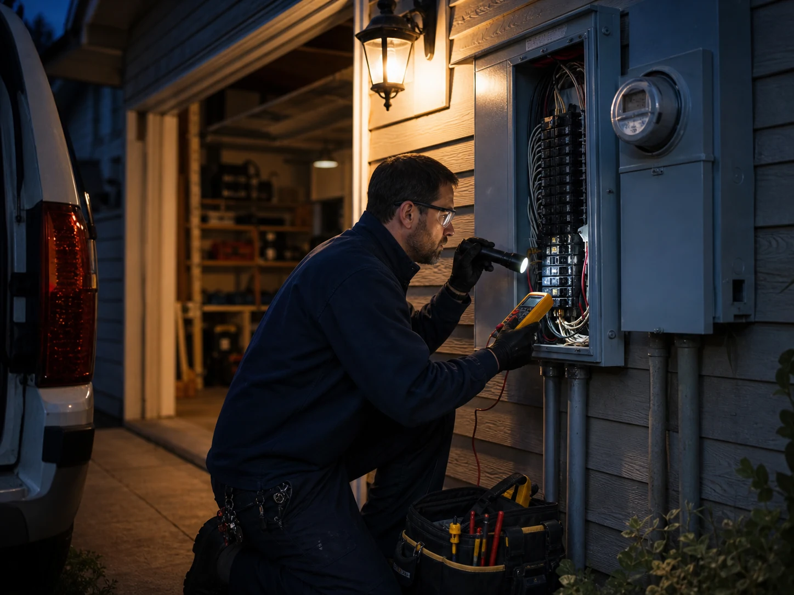
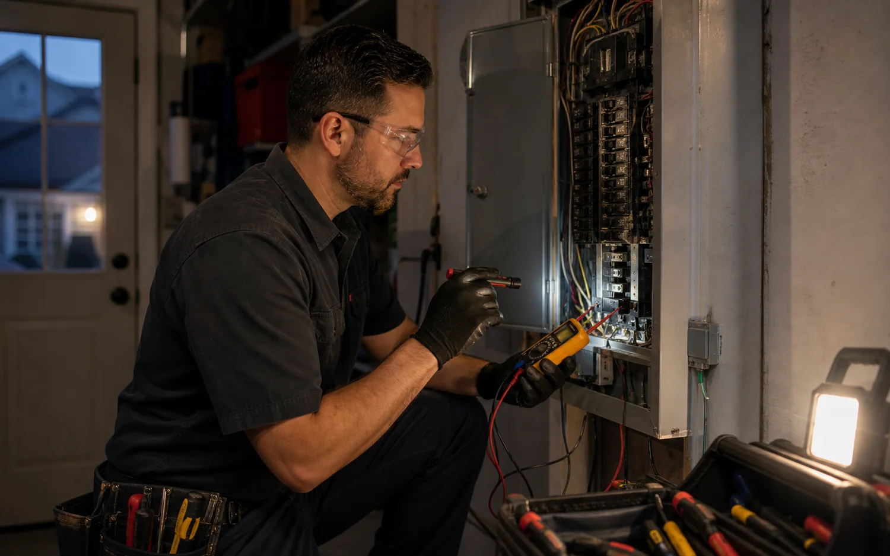
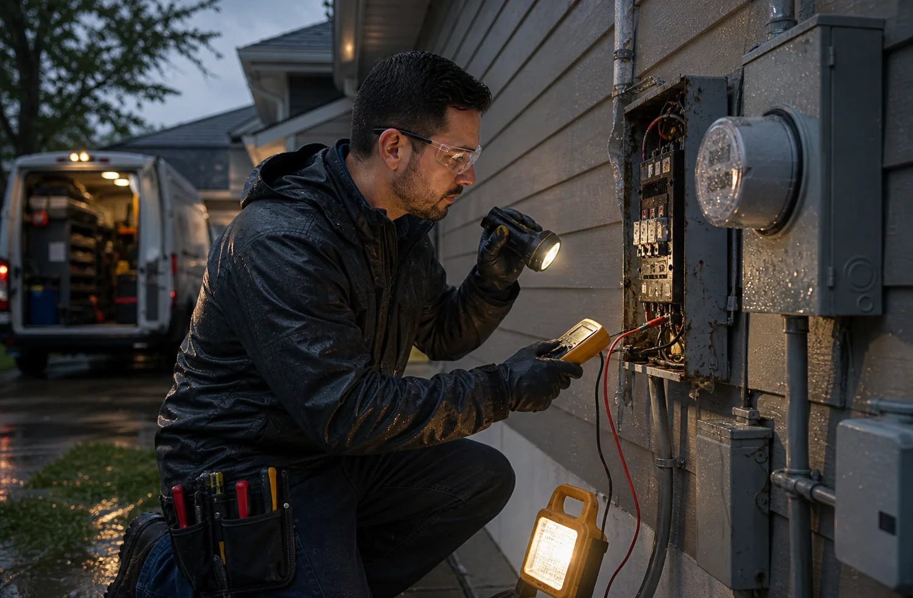

Safety triage
The intake asks whether there is active fire, smoke, shock risk, exposed conductors, water intrusion, or utility involvement before routing the service request.
Emergency electrical pages should not create panic, but they must separate serious symptoms from routine repairs. helps capture heat, smells, repeated trips, partial outages, storm damage, and access details so a provider can respond with the right context.

If there is active fire, smoke, shock risk, medical danger, or immediate life-safety concern, emergency services or the utility should be contacted first. This site is for routing electrical service requests to independent providers.

Emergency troubleshooting often starts with visible damage, smell, temperature, affected areas, recent weather, and whether any breaker resets immediately. A provider may isolate unsafe loads before permanent repair is approved.
The first provider call is more useful when the request says what changed, where it changed, what still has power, whether anything is hot or wet, and whether the customer has already turned a breaker off. Exterior storm symptoms may involve utility-owned equipment, so the provider may need photos of the meter area, service mast, disconnect, exterior outlets, and visible damage.

The exact method depends on the building, equipment, local code, and provider judgment, but these are the practical checkpoints that make the request clearer.
The intake asks whether there is active fire, smoke, shock risk, exposed conductors, water intrusion, or utility involvement before routing the service request.
Providers look for heat marks, damaged covers, wet locations, tripped breakers, loose devices, damaged conduit, and unsafe access conditions before deeper testing.
When safe, providers may check voltage, breaker behavior, continuity, load symptoms, and circuit isolation with appropriate meters and protective procedures.
Unsafe equipment may be disconnected, circuits left off, or temporary measures recommended until a permanent repair and any required permit path are approved.
Electrical requirements vary by jurisdiction and property type. These pages describe common coordination needs; the independent provider confirms the enforceable requirements for the actual site.
Photos, symptoms, panel access, service group, timing, and property type help the first provider call become more useful.